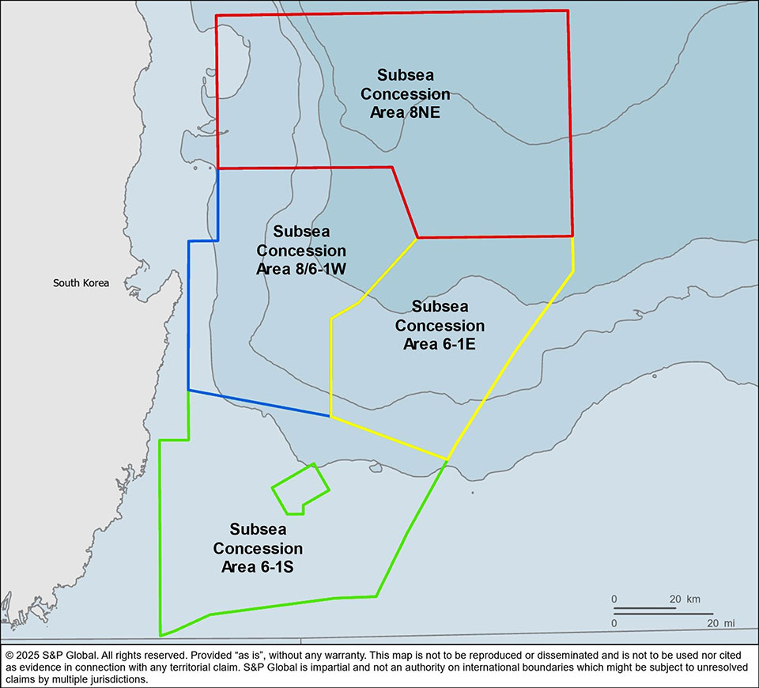
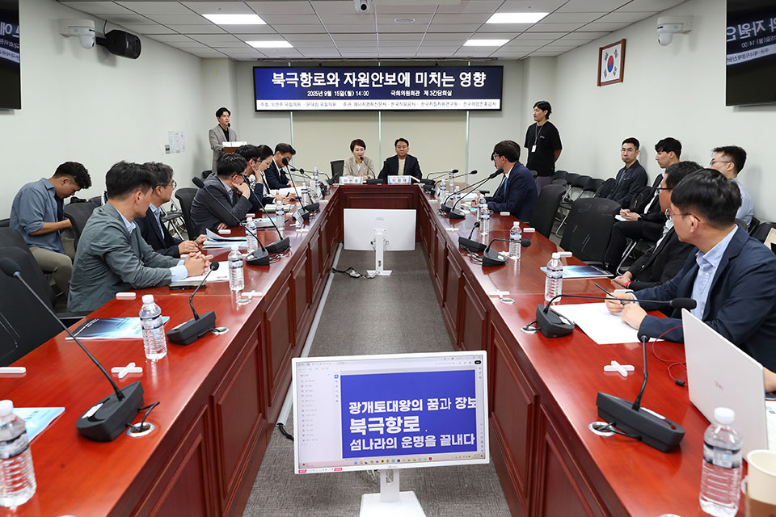
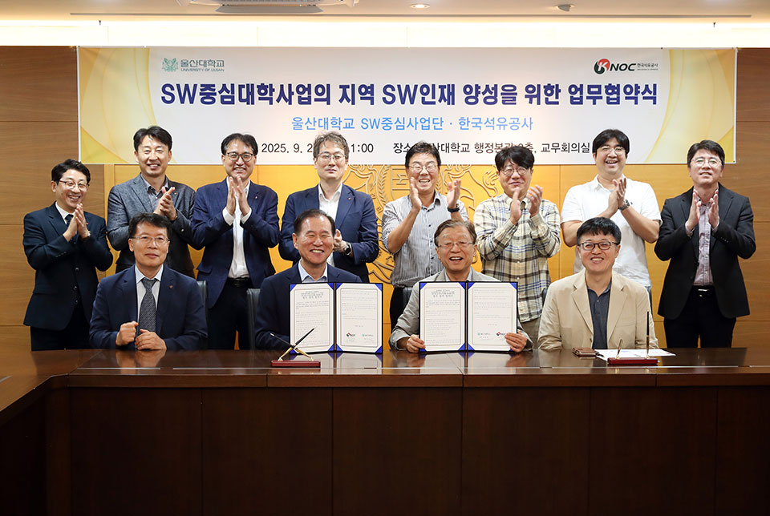
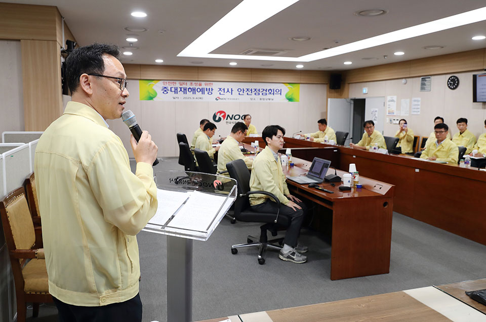
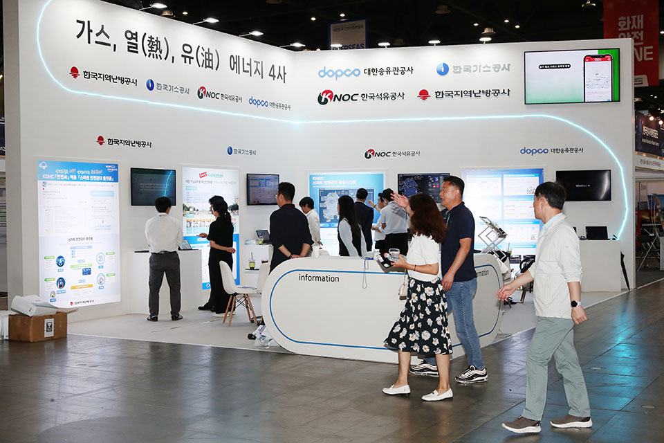
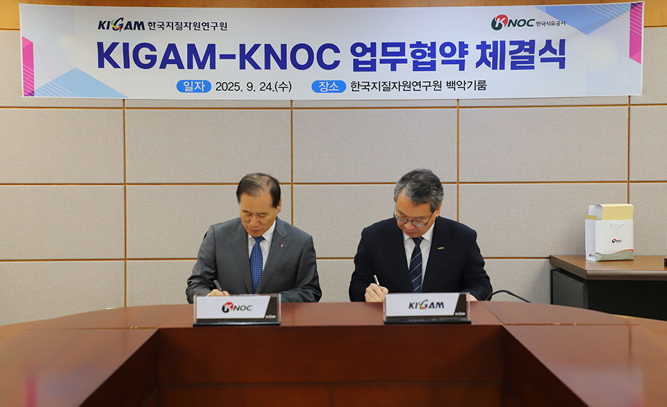
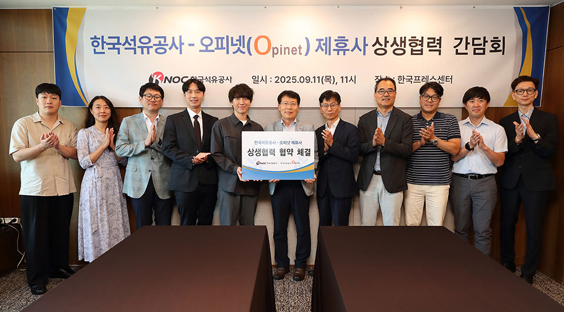
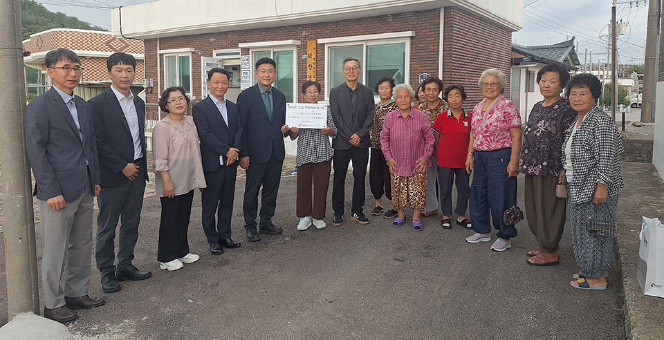

동해 해상광구 투자유치입찰 마감
공사가 9월 19일 동해 해상광구 투자유치 입찰을 마감하고 개찰을 통해 복수의 외국계 업체가 입찰에 참여했음을 확인했다. 공사는 지난 3월 동해 해상광구 투자유치 입찰을 개시했으며, 잠재 투자사의 입찰 기간 연장 요청에 따라 입찰 기간을 3개월 연장한 바 있다. 공사는 입찰 마감에 따라 S&P Global 투자유치 자문사를 통해 입찰 평가 및 입찰 제안서에 대한 충분한 검토를 거친 뒤 적합한 투자자가 있을 경우 우선협상 대상자를 선정할 예정이다. 우선협상 대상자가 선정될 경우, 세부 계약조건에 대해 협상을 거쳐 조광권 계약 서명 절차를 진행하게 된다.

공사 동해 해상광구 투자유치입찰 광구도(출처: 온비드)북극항로 국회 세미나 공동 주관
공사가 9월 15일 국회의원회관에서 ‘북극항로가 우리 자원안보에 미치는 영향’이라는 주제의 세미나를 주관하고 패널토론에 참여했다. 이번 세미나는 북극항로의 현황과 향후 전망, 그리고 에너지 산업에 미치는 영향을 진단한 후 우리나라가 준비해야 할 지점들을 모색하는 자리로, 이언주/문대림 국회의원이 주최, 공사를 비롯한 에너지경제신문, 지질자원연구원, 한국해양진흥공사가 공동 주관하고 해양수산부가 후원했다. 이날 이광재 전 국회사무총장(북극항로 개척이 글로벌 및 한국에 미치는 영향)과 공주대 임은정 교수(북극항로가 에너지 산업에 주는 영향과 한국의 준비)가 발표를 진행했으며, 공사에서는 패널토론에 참석했다.

북극항로 국회 세미나울산대와 상호협력 업무협약 체결
9월 22일, 공사가 울산대와 울산대 본관에서 SW중심대학사업의 지역 소프트웨어 인재 양성을 위한 업무협약을 체결했다. 이 자리에는 공사 김동섭 사장을 비롯해 오연천 울산대 총장 등이 참석했으며, AI와 Big Data, 에너지 기술을 활용한 기업 현장의 개선 과제 개발, 실전형 프로젝트 기반 SW전문가 양성을 위한 공유 가능한 AI 학습데이터 협력, 공사 재직자를 대상으로 한 디지털 역량 강화 교육 운영 등에 대한 협력을 약속했다.

한국석유공사-울산대학교 업무협약식중대재해예방 전사 안전점검회의 개최
9월 4일 본사 4층 종합상황실에서 안전한 일터 조성을 위한 중대재해예방 전사 안전점검회의가 개최됐다. 이 자리에서는 먼저 SHE추진실에서 산업재해 및 공사 안전사고 발생 현황 등을 공유했으며, 이어 9개 비축지사와 거제건설출장소, 총무처가 현장의 위험요소 관리 현황과 대응 체계, 안전 문화 확산 활동 등을 발표했다. 김동섭 사장은 각 현장에 실질적인 안전장비가 시스템적으로 마련되어 있는지를 반드시 점검하고, 안전을 최우선 가치로 삼아 사고 예방에 최선을 다해야 한다고 강조했다.

중대재해예방 전사 안전점검회의대한민국 안전산업박람회 참가
공사가 9월 17일부터 19일까지 일산 킨텍스에서 열린 2025 대한민국 안전산업박람회에 참가했다. 올해는 스마트 디지털 재난안전관리를 주제로, 산업, 화재, 침수, 공공안전 등 다양한 분야의 전시가 진행됐는데, 공사는 에너지 유관 4사와 스마트 재난안전관리 분야에 공동 참여해 KNOC 스마트 안전관리 통합시스템을 선보였다. KNOC 스마트 안전관리 통합시스템은, 전사 안전 업무를 하나로 통합해 사업장 모니터링과 위험 요인 분석을 지원하며, 고위험 작업을 집중적으로 관리하기 위해 개발한 디지털 안전관리 플랫폼이다. 한편, 공사는 이번 박람회에서 일상생활에서 발생할 수 있는 재난 유형별 국민행동요령을 안내 책자로 배포하는 재난안전캠페인을 실시했다.

2025 대한민국 안전산업박람회한국지질자원연구원과 국내 대륙붕 탐사·탄소중립 협력 강화를 위한 업무협약
9월 24일 공사가 대전 한국지질자원연구원에서 지질자원연구원과 업무협약 서명식을 가졌다. 양 기관은 이미 2020년과 2023년 두 차례 업무협약을 체결하고 산학연 공동연구 플랫폼을 통해 자원개발분야 공동연구와 인력양성을 위해 협력을 확대해 오고 있다. 이번 서명식은 국내 대륙붕 석유자원탐사 및 탄소중립 분야의 협력체계를 강화하기 위한 것으로, 앞으로 3년 간 양 기관은 국내외 석유자원탐사 및 이산화탄소 지중 저장소 확보 관련 연구, 국가 해양 지질정보 구축 및 기초 지질·지구 물리 연구 활성화 추진 등의 분야에서 협력하게 된다.

한국석유공사-한국지질자원연구원 업무협약식오피넷 제휴사 상생협력 간담회 개최
공사가 9월 11일 한국프레스센터에서 6개 오피넷 제휴사와 함께 상생협력 간담회를 개최했다. 이번 간담회는 오피넷 제휴사의 의견을 수렴하고, 신규 사업 기회를 발굴하는 한편 협력 방안을 논의하기 위해 마련되었다. 이 자리에는 주요 제휴사 대표와 실무 책임자가 참석해 각 사의 유가정보 제공 서비스와 사업 현황에 대해 공유하고, 다양한 유가정보를 활용한 데이터 연계 사업의 동반 성장 방향을 집중적으로 논의했다. 간담회 이후에는 희망하는 제휴사와 상생협력 협약도 체결할 예정이다.

한국석유공사-오피넷 제휴사 상생협력 간담회KNOC 드림 햇빛에너지 5호 준공
공사가 9월 16일 강원도 동해시에 위치한 덕장경로당에 태양광 발전설비 KNOC 드림 햇빛에너지 5호를 기증하고 준공식을 개최했다. KNOC 드림 햇빛에너지는 자체 태양광 발전설비를 통해 얻은 잉여전력을 한전에 판매하고, 그 수익금으로 지역 사회복지시설에 태양광 발전설비를 기증하는 프로그램으로, 현재 6호 설치까지 완료한 바 있다.

KNOC 드림 햇빛에너지 5호 준공(동해시 덕장경로당)